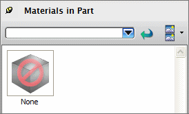
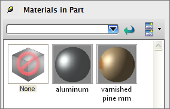
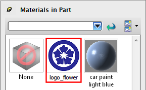

部件中的材料资源板
部件中的材料  资源板显示已应用或保存在工作部件中的所有材料。
资源板显示已应用或保存在工作部件中的所有材料。
NX 将资源板中的材料与部件一同保存，无论您是否已将它们应用到对象。
-
新建部件文件时，部件中没有材料，并且可以看到无缩略图

如果打开其中添加了材料和纹理的部件文件，则这些材料作为缩略图显示在资源板中。

-
可以在此资源板中添加或删除材料。当您删除已应用到模型的材料时，NX 将移除材料并在移除材料处重新显示面或实体。
-
可以将材料从系统材料和材料库复制到该资源板以在此处编辑
在编辑材料时，NX 将动态更新缩略图。
-
可以从该资源板直接应用或将材料拖到选择中
-
您也可以在这个资源板上新建贴花，贴花以缩略图模式显示为展平样本

位于何处？
|
应用模块 |
基本环境、建模 |
|
先决条件 |
必须单击可视化形状工具条上的材料/纹理 |
|
资源条 |
部件中的材料 |